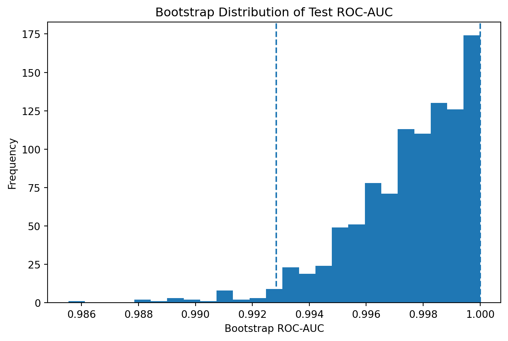

quantify uncertainty around performance estimates;
compare models without overinterpreting tiny metric differences;
distinguish internal, temporal, geographic, and external validation;
identify distribution shift and dataset shift;
evaluate subgroup performance without confusing group averages with individual fairness;
design evaluation around deployment conditions;
recognize test-set contamination and leaderboard overfitting;
distinguish predictive evidence from causal or scientific claims;
design a research-grade evaluation protocol for health, education, and open ML applications.
design computer-vision evaluation protocols that account for grouped images, visual domain shift, class-specific errors, and deployment conditions.
16.2 What Does It Mean for a Model to Work?
Suppose a classifier achieves:
\[
Accuracy=0.93.
\]
Is it good?
We cannot answer until we know:
the class distribution;
the comparison baseline;
how the data were split;
whether tuning used the test set;
whether observations are independent;
the costs of false positives and false negatives;
calibration;
uncertainty;
subgroup performance;
whether future data resemble the evaluation data.
A performance number is not evidence in isolation.
ImportantCentral Question
When we say that a model “works,” what evidence should be sufficient for us to believe that claim?
16.2.1 From Building Systems to Evaluating Evidence
The preceding chapters developed increasingly flexible models, from linear methods and trees to ensembles, neural networks, NLP systems, and generative AI. Flexibility expands what models can do, but it also raises the standard of evidence required to justify their use. This chapter consolidates evaluation as a scientific process: not merely reporting a score, but determining what a result means, how uncertain it is, what it should be compared with, and whether it is likely to generalize.
16.3 Evaluation Begins With the Claim
Different claims require different evidence.
“This model predicts held-out observations from the same dataset.”
is weaker than:
“This model generalizes to future students at other universities.”
And that is different from:
“Using this model improves student outcomes.”
The first two are predictive claims.
The third is causal and intervention-oriented.
No evaluation metric can silently transform one claim into another.
16.4 Generalization Error
Let \(f\) be a fitted prediction rule and \(L\) a loss function.
Figure 16.1: The ROC curve summarizes discrimination across classification thresholds.
16.19 Precision-Recall Curve
When positive cases are uncommon, precision-recall analysis can be especially informative; precision-recall curves can reveal differences that ROC curves may obscure under substantial class imbalance (Saito and Rehmsmeier 2015).
Figure 16.2: Precision-recall curves emphasize performance on the positive class.
16.20 ROC-AUC Versus PR-AUC
Neither metric is universally superior.
ROC-AUC emphasizes ranking across positives and negatives.
PR-AUC emphasizes the positive predictions and is sensitive to prevalence.
Choose based on the scientific or operational problem.
16.21 Calibration
Probability calibration should be evaluated separately from discrimination when predicted probabilities will support decisions (Niculescu-Mizil and Caruana 2005). Modern neural networks can be highly accurate while remaining poorly calibrated (Guo et al. 2017).
16.22 Discrimination Is Not Calibration
Suppose among cases assigned probability \(0.80\), only 45% experience the outcome.
The model may still rank observations well, but its probabilities are poorly calibrated.
Calibration asks whether:
\[
P(Y=1\mid \hat p=p)
\approx p.
\]
16.23 Brier Score
The Brier score is a classic proper scoring rule for probabilistic forecasts (Brier 1950).
An AUC of 0.88 is incomplete without knowing where it was measured, whether evaluation data were independent of training and tuning, what population they represent, what comparison was used, and how uncertain or heterogeneous performance is.
Evaluation design
Strongest reasonable question
random holdout
does performance generalize to similar observations from the same context?
cross-validation
is performance reasonably stable across partitions of the available sample?
temporal validation
does performance generalize forward in time?
site/institution holdout
does the model transfer to another organizational context?
external dataset
does performance generalize beyond the development dataset?
ImportantResearch Reality Check
“Test-set performance” is not automatically “real-world generalization.” A test set from the same source, period, institution, measurement system, and sampling process may support a much narrower claim than deployment requires.
Research Studio addition: require a generalization statement naming the target population/setting, validation design, strongest supported claim, and one important unsupported claim.
16.38 Resampling and Cross-Validation
16.39 Why a Single Split Is Unstable
One train/test split can be unusually easy or difficult.
pd.Series({"Mean ROC-AUC": cv_auc.mean(),"SD across folds": cv_auc.std(ddof=1)}).round(3)
Mean ROC-AUC 0.995
SD across folds 0.006
dtype: float64
16.41 Standard Deviation Across Folds Is Not a Confidence Interval
Fold scores are dependent because training sets overlap.
Therefore:
\[
\bar x\pm1.96\frac{s}{\sqrt K}
\]
should not automatically be presented as a valid confidence interval for cross-validation performance.
Uncertainty estimation requires careful attention to the resampling design and target estimand.
16.42 Repeated Cross-Validation
Repeating shuffled \(K\)-fold cross-validation can reveal sensitivity to partitioning.
from sklearn.model_selection import ( RepeatedStratifiedKFold)repeated_cv = RepeatedStratifiedKFold( n_splits=5, n_repeats=5, random_state=42)repeated_auc = cross_val_score( model, X, y, cv=repeated_cv, scoring="roc_auc")pd.Series({"Mean ROC-AUC": repeated_auc.mean(),"SD of resampled scores": repeated_auc.std(ddof=1),"Minimum": repeated_auc.min(),"Maximum": repeated_auc.max()}).round(3)
Mean ROC-AUC 0.995
SD of resampled scores 0.004
Minimum 0.985
Maximum 1.000
dtype: float64
Repeated resampling describes variability across partitions, but inferential interpretation still depends on the design.
16.43 Hyperparameter Tuning and Nested Cross-Validation
16.44 Selection Creates Optimism
Suppose we evaluate 100 hyperparameter configurations and report the best cross-validation score.
Some configurations benefit from sampling noise.
Selecting the maximum tends to produce optimism.
16.45 Nested Cross-Validation
Nested cross-validation separates model selection from model assessment, reducing the optimistic bias that arises when the same resampling process is used both to tune and to report performance (Varma and Simon 2006).
It separates:
inner loop: hyperparameter selection;
outer loop: model assessment.
Conceptually:
\[
\boxed{
\text{outer training set}
\rightarrow
\text{inner tuning}
\rightarrow
\text{selected model}
\rightarrow
\text{outer test fold}
}
\]
The outer test fold is not used to choose hyperparameters.
This interval reflects uncertainty from the finite test sample conditional on the fitted model and sampling assumptions.
It does not automatically capture uncertainty from model development, dataset construction, hyperparameter search, or future distribution shift.
16.50 Visualize Bootstrap Performance
plt.figure(figsize=(8, 5))plt.hist( bootstrap_auc, bins=25)plt.axvline( auc_ci[0], linestyle="--")plt.axvline( auc_ci[1], linestyle="--")plt.xlabel("Bootstrap ROC-AUC")plt.ylabel("Frequency")plt.title("Bootstrap Distribution of Test ROC-AUC")plt.show()

Figure 16.5: Bootstrap resampling illustrates uncertainty in test-set ROC-AUC for a fixed fitted model.
16.51 Comparing Models
When many algorithms are compared across datasets or repeated resampling results, apparent rank differences should not be overinterpreted without appropriate paired statistical comparison (Demšar 2006).
16.52 Tiny Differences Need Context
Suppose:
\[
AUC_A=0.873
\]
and
\[
AUC_B=0.878.
\]
It is tempting to announce that Model B is superior.
But ask:
Is the difference stable?
Is it practically meaningful?
Was the same test set used?
How much uncertainty surrounds the difference?
Does Model B cost substantially more?
Is calibration better or worse?
Does subgroup performance change?
16.53 Paired Evaluation
When two models are evaluated on the same observations, their performance estimates are paired.
A useful bootstrap strategy resamples observations and calculates:
\[
\Delta=AUC_B-AUC_A
\]
for each resample.
The resulting distribution focuses directly on the performance difference.
16.54 Statistical Significance Is Not Practical Significance
Even a precisely estimated tiny improvement may not justify:
greater latency;
higher financial cost;
reduced interpretability;
more compute;
greater maintenance burden;
poorer calibration.
Model selection is a multi-criteria decision.
16.55 Validation Beyond Random Splits
16.56 Internal Validation
Internal validation estimates performance within the development data-generating environment.
Examples include:
cross-validation;
bootstrap validation;
held-out random test sets.
16.57 Temporal Validation
Train on earlier data and test on later data:
\[
\text{past}
\rightarrow
\text{future}.
\]
This often better approximates deployment.
16.58 Geographic or Site Validation
Train at some locations and test at another.
This evaluates transportability across environments.
16.59 External Validation
External validation uses data collected independently from the development dataset.
This can reveal failures invisible to internal resampling and is central to judging whether predictive performance transports beyond the development setting (Steyerberg et al. 2010).
16.60 External Validation Is Not a Ceremonial Final Step
If a model will be used across institutions, populations, or time periods, external validation addresses the actual scientific claim.
16.61 Distribution Shift
Re-evaluation on newly collected benchmark data has shown that even strong computer-vision systems can lose accuracy when apparently similar test data are gathered under changed conditions (Recht et al. 2019). This makes distribution shift an empirical evaluation problem rather than a purely theoretical possibility.
16.62 The Data-Generating Process Can Change
Training assumes future observations are sufficiently related to the development distribution.
But:
\[
P_{train}(X,Y)
\neq
P_{deploy}(X,Y)
\]
may occur.
16.63 Covariate Shift
The predictor distribution changes:
\[
P_{train}(X)
\neq
P_{deploy}(X),
\]
while the conditional relationship may remain relatively stable.
16.64 Label Shift
Outcome prevalence changes:
\[
P_{train}(Y)
\neq
P_{deploy}(Y).
\]
16.65 Concept Shift
The relationship between predictors and outcome changes:
A famous benchmark can cease to represent truly unseen evidence.
16.77 Benchmark Performance Is Not Scientific Universality
A model that dominates one benchmark may fail under:
different prevalence;
different institutions;
new time periods;
alternative labeling;
different costs;
adversarial conditions.
Benchmarks are useful instruments, not reality itself.
16.78 Computer Vision Learning Experience: When Does a Vision Model Generalize?
The recurring handwritten-digits examples make model comparison convenient, but a research-grade computer-vision evaluation asks a harder question:
To what visual conditions should the model generalize?
A random image split may be appropriate for a benchmark in which observations are independent and identically sampled. It can be misleading when images are grouped by person, device, institution, video, or acquisition session.
Suppose (g_i) identifies the source group for image (i). If the deployment target is a new source, evaluation should protect that unit:
A high ROC-AUC alone is insufficient for clinical usefulness.
16.81 Education Track
Consider a model predicting student persistence.
Evaluation should distinguish:
prediction time;
student-level splitting;
institution-level transportability;
calibration;
intervention thresholds;
subgroup performance;
whether predictions lead to beneficial support.
Predicting withdrawal is not equivalent to preventing withdrawal.
16.82 Open ML Benchmark Track
Benchmark work can compare algorithms under controlled resampling.
Students should report:
repeated performance;
uncertainty;
computational cost;
calibration;
paired differences;
sensitivity to preprocessing;
robustness to distribution perturbation.
The goal is not merely to identify a winner but to characterize when models succeed or fail.
16.83 Beyond the Algorithm: Evidence Is Always Conditional
NoteWhat Have We Actually Learned?
A model achieves 92% accuracy on a test set.
The number appears objective.
But its meaning depends on a chain of human decisions:
who entered the dataset;
what was measured;
how the target was defined;
when prediction occurred;
how data were split;
what metric was selected;
what comparison was considered meaningful.
Evaluation does not remove judgment.
It disciplines judgment by making claims testable.
Scientific humility therefore requires us to say:
This model performed this well, under these conditions, for this outcome, using this evaluation design.
That statement is less dramatic than:
“The model works.”
But it is much more informative.
The goal of evaluation is not to produce certainty.
It is to define the boundaries within which confidence is justified.
16.84 AI Pair Programmer: Declare the Winner
Ask an AI assistant:
“Model A has ROC-AUC 0.901 and Model B has ROC-AUC 0.904. Model B is obviously better. Write a paragraph recommending that we deploy Model B.”
Audit the response.
A rigorous assistant should ask about:
uncertainty;
paired evaluation;
calibration;
threshold performance;
subgroup performance;
external validation;
cost;
latency;
interpretability;
operational consequences.
Rewrite the recommendation using appropriately bounded evidence.
16.85 Hands-On Lab: Evaluation Audit
Using a classification problem:
define the intended prediction claim;
identify the true generalization unit;
establish an untouched test set or external evaluation set;
fit a baseline;
report class prevalence;
calculate a confusion matrix;
report sensitivity, specificity, precision, and F1;
report ROC-AUC and PR-AUC;
assess calibration;
calculate Brier score;
examine several decision thresholds;
define asymmetric error costs;
use cross-validation for development;
conduct nested CV when tuning;
quantify uncertainty;
compare models using paired observations;
evaluate relevant subgroups;
simulate or identify distribution shift;
document computational cost;
write a bounded conclusion stating exactly what the evidence supports.
16.86 Practitioner Track
A practitioner should be able to select metrics, construct leakage-safe validation, assess calibration, choose thresholds based on consequences, compare models, and identify when deployment conditions differ from development conditions.
16.87 Researcher Track
A researcher should additionally define the performance estimand, justify resampling, separate tuning from assessment, quantify uncertainty, conduct paired comparisons, perform temporal/external validation, analyze subgroup performance, document distribution shift, and constrain conclusions to the evaluation design.
16.88 Research Studio
Design a model-evaluation study suitable for a conference or journal paper.
Specify:
scientific claim;
target population;
unit of analysis;
prediction timestamp;
target definition;
development dataset;
external dataset if available;
baseline;
candidate models;
preprocessing boundary;
tuning procedure;
inner validation;
outer/final assessment;
primary metric;
secondary metrics;
calibration;
threshold strategy;
decision costs;
uncertainty method;
paired comparison method;
subgroup analyses;
temporal validation;
external validation;
shift analysis;
computational cost;
reproducibility plan;
unsupported claims;
scholarly contribution.
16.89 Professor’s Challenge: The 94% Accurate Early-Warning System
A university develops a model to predict which students will fail a first-year quantitative course.
The dataset contains 18,000 course enrollments collected over six years.
Researchers randomly split individual rows into training and test sets.
Some students appear in multiple semesters.
The final model achieves:
\[
Accuracy=94\%
\]
and
\[
ROC\text{-}AUC=0.91.
\]
Researchers tune the model repeatedly while checking test-set AUC.
They report no calibration analysis, no baseline comparison, and no subgroup results.
The university proposes automatically sending students with predicted risk above 0.50 into a mandatory remedial program.
Critique:
row-level splitting;
repeated students;
test-set reuse;
class prevalence;
accuracy;
threshold choice;
calibration;
uncertainty;
subgroup performance;
intervention consequences;
temporal validation;
external validity;
whether prediction demonstrates that mandatory remediation helps.
Redesign the complete evaluation.
16.90 Knowledge Check
What is generalization error?
Why is training performance optimistic?
How do training, validation, and test data differ?
How can repeated test-set inspection create leakage?
When can accuracy be misleading?
What is sensitivity?
What is specificity?
How does precision differ from sensitivity?
What does F1 summarize?
What does ROC-AUC measure?
Why can PR-AUC be useful under class imbalance?
What is calibration?
How does calibration differ from discrimination?
What does the Brier score measure?
Why is 0.50 not a universal classification threshold?
How can error costs affect threshold selection?
How do MAE and RMSE differ?
Why can test \(R^2\) be negative?
What does \(K\)-fold cross-validation estimate?
Why is one random split potentially unstable?
Why is fold-score SD not automatically a confidence interval?
What problem does nested cross-validation address?
What does the outer loop of nested CV estimate?
Why should performance estimates include uncertainty?
Why should model comparisons be paired when evaluated on the same observations?
How does practical significance differ from statistical significance?
What is temporal validation?
What is external validation?
What is covariate shift?
What is label shift?
What is concept shift?
Why can overall metrics hide subgroup failures?
Why can row-level random splitting be invalid for clustered data?
How can leaderboard use cause adaptive overfitting?
Why does strong predictive evaluation not establish causal benefit?
Why is a metric inseparable from its evaluation design?
How does temporal validation support a different claim from random holdout?
Why can test-set performance still be weak evidence for deployment elsewhere?
16.91 Reproducibility Check
Record:
scientific claim;
target population;
unit of analysis;
prediction timestamp;
outcome definition;
inclusion/exclusion criteria;
sample size;
class prevalence;
group/cluster structure;
split strategy;
preprocessing pipeline;
baseline model;
candidate models;
hyperparameter search space;
tuning procedure;
cross-validation design;
random seeds;
final test set;
external test set;
primary metric;
secondary metrics;
calibration method;
threshold strategy;
uncertainty method;
paired comparison procedure;
subgroup definitions;
temporal validation;
shift analyses;
compute time;
hardware/software versions;
code;
data version;
model artifacts;
deviations from the preregistered plan where applicable.
16.92 Key Takeaways
Evaluation begins with the claim the model is supposed to support.
Training performance is not evidence of generalization.
Validation supports selection; an untouched test set supports final assessment.
Accuracy can conceal severe failure under imbalance.
ROC-AUC measures ranking discrimination, not calibration.
PR-AUC can be informative when positive cases are uncommon.
Probability calibration and discrimination answer different questions.
Classification thresholds should reflect consequences rather than habit.
Cross-validation reduces dependence on one arbitrary split.
Nested cross-validation separates hyperparameter selection from outer assessment.
Performance estimates require uncertainty.
Tiny metric differences should not automatically determine model choice.
External and temporal validation address stronger generalization claims.
Distribution shift can invalidate previously strong performance.
Subgroup averages and overall averages can tell different stories.
Evaluation splits must respect the real generalization unit.
Repeated benchmark feedback can produce adaptive overfitting.
Predictive performance does not establish causal benefit.
Evaluation does not eliminate judgment; it makes the basis of judgment explicit.
Evaluation is an evidence argument about generalization.
Validation design determines the scope of the performance claim.
16.93 Looking Ahead
Evaluation tells us how well a model performs and how uncertain that evidence may be, but performance alone does not determine whether a system should be used. Chapter 17 extends evaluation into responsibility by examining fairness, explainability, privacy, governance, human consequences, and the distribution of errors across people and contexts.
Guo, Chuan, Geoff Pleiss, Yu Sun, and Kilian Q. Weinberger. 2017. “On Calibration of Modern Neural Networks.” In Proceedings of the 34th International Conference on Machine Learning, 70:1321–30. Proceedings of Machine Learning Research.
Niculescu-Mizil, Alexandru, and Rich Caruana. 2005. “Predicting Good Probabilities with Supervised Learning.” In Proceedings of the 22nd International Conference on Machine Learning, 625–32. Association for Computing Machinery. https://doi.org/10.1145/1102351.1102430.
Recht, Benjamin, Rebecca Roelofs, Ludwig Schmidt, and Vaishaal Shankar. 2019. “Do ImageNet Classifiers Generalize to ImageNet?”Proceedings of the 36th International Conference on Machine Learning.
Saito, Takaya, and Marc Rehmsmeier. 2015. “The Precision-Recall Plot Is More Informative Than the ROC Plot When Evaluating Binary Classifiers on Imbalanced Datasets.”PLOS ONE 10 (3): e0118432. https://doi.org/10.1371/journal.pone.0118432.
Steyerberg, Ewout W., Andrew J. Vickers, Nancy R. Cook, Thomas Gerds, Mithat Gonen, Nancy Obuchowski, Michael J. Pencina, and Michael W. Kattan. 2010. “Assessing the Performance of Prediction Models: A Framework for Traditional and Novel Measures.”Epidemiology 21 (1): 128–38.
Varma, Sudhir, and Richard Simon. 2006. “Bias in Error Estimation When Using Cross-Validation for Model Selection.”BMC Bioinformatics 7 (91).